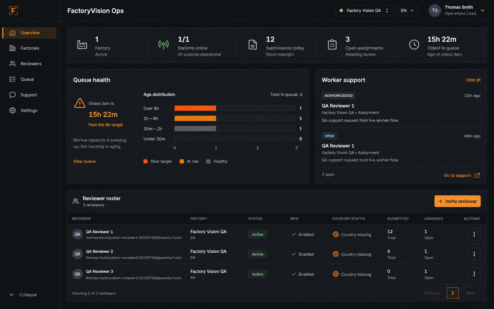

Option 01
Operations Briefing
A balanced overview with queue health, worker support, and the reviewer roster visible together. Familiar, polished, and easy to implement incrementally.
Best for
General operations leads who need one stable home screen.
Tradeoff
Still dashboard-oriented rather than task-first.
